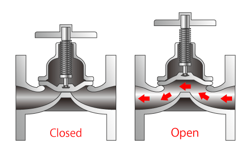

Diaphragm valves are flex-body valves in which the valve body consists of a rigid and flexible section. The flexible body section is provided by a diaphragm which, in connection with a compressor, represents the closure member. The seat is provided by the rigid body section and may consist of a weir across the flow passage or be provided by the wall of a straight-through flow passage.
The weir in the flow passage is designed to reduce flexing of the diaphragm to a minimum, while still providing a smooth and streamlined flow passage. The flexing stress in the diaphragm is therefore minimal, resulting in a correspondingly long diaphragm life.
Diaphragm valves with a straight-through flow passage require a more flexible diaphragm than weir-type diaphragm valves. For this reason, the construction material for diaphragms of straight-through diaphragm valves is restricted to elastomers.
Diaphragm valves are actuated by linear or multi-turn actuators. This could be pneumatic or hydraulic using a piston or a diaphragm. Linear actuation is also possible using electric and manual actuators. This could be manual through the use of a multi-turn hand-wheel, or electric using a motor and gear box attached to a rack and pinion or scotch yolk to convert between rotational and linear motion.